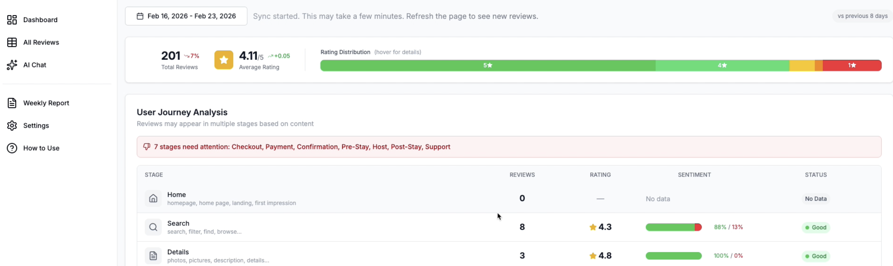
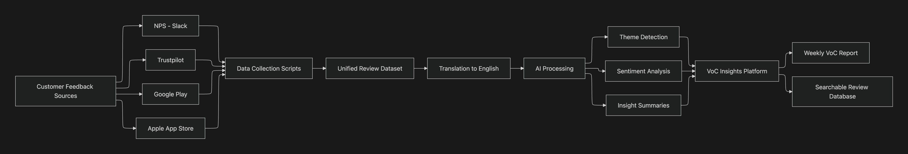

Context
Customer feedback was coming in from several places at once: NPS feedback, Trustpilot, Google Play, and the Apple App Store. The problem was not a lack of feedback. It was that the feedback was fragmented, multilingual, and difficult to compare.
Product teams were spending time manually looking through individual reviews, which made it hard to spot repeated issues, emerging bugs, or trends in what users actually felt.
We had plenty of feedback, but not enough visibility into the patterns behind it.
Treating PMs as the users
I approached the project by treating product managers as the primary users of the system. The workflow had to answer practical questions quickly: what customers complain about most, what they praise, and which themes are getting stronger after a release.
That framing shaped the requirements. The system needed to aggregate feedback from multiple sources, normalize the data, translate it, detect recurring themes, and make the underlying reviews searchable.

Designing the user flow
Weekly summary first
The user flow starts with a weekly customer feedback summary so PMs can get a quick read on what is happening before diving into individual reviews.
Themes and examples
The report highlights recurring positive and negative themes, then links each theme back to real review examples so the team can validate the signal.
From theme to product area
Insights are mapped to specific journey points like search, booking, or checkout so teams can move from sentiment to a concrete area of investigation.
Top-down and bottom-up analysis
They can check top-down from the sentiment / AI summary of the themes, or drill down into individual reviews via the dashboard or the AI chat feature. It shortens the distance between raw reviews and the next product decision.
Building the system
I designed a pipeline that collected customer feedback from different platforms, brought it into a unified dataset, translated it into English, and used OpenAI API for theme detection and sentiment analysis.
That dataset then fed a searchable review database, insight summaries, and a weekly VoC report that gave the team a single place to explore feedback.

Impact
- Found issues and bugs early in the development process
- Reduced the manual effort needed to review feedback across platforms
- Improved visibility into sentiment across the product journey
- Made customer feedback a regular input into product discussions
Lessons learned
Customer feedback becomes much more valuable when it is structured and centralized. Raw reviews are easy to collect, but they are hard to use without an internal system that keeps them organized.
I also learned that internal tools benefit from the same product thinking as user-facing features. When you design for the real weekly workflow of the people using the tool, the system becomes easier to adopt and more useful in practice.
Reflection
This project was about closing the gap between customer feedback and product decisions. Instead of relying on scattered signals, the team gained a structured view of how users were actually experiencing the product.